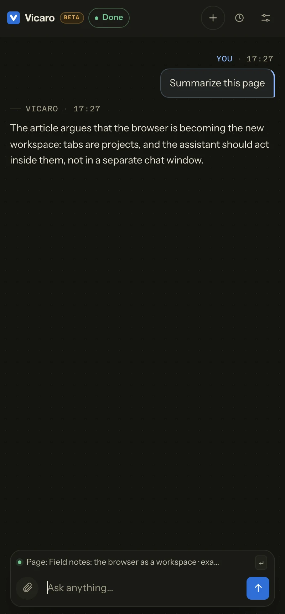
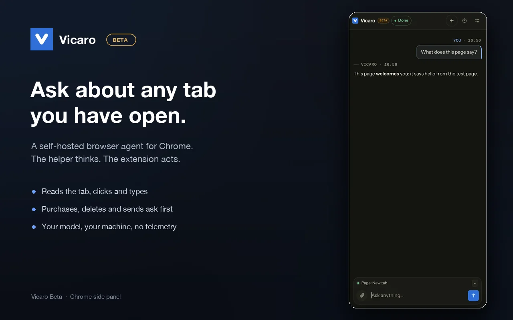
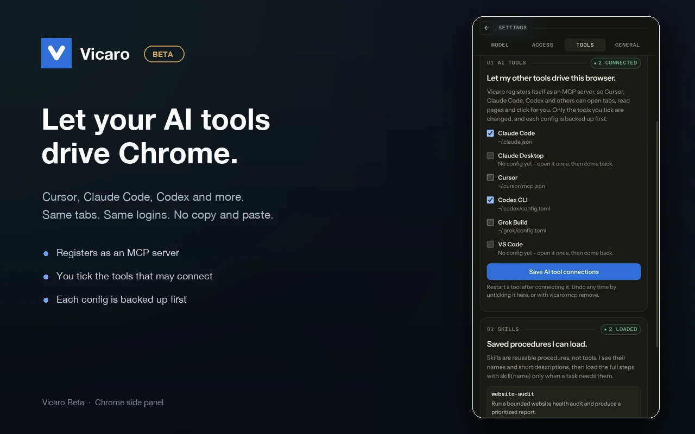
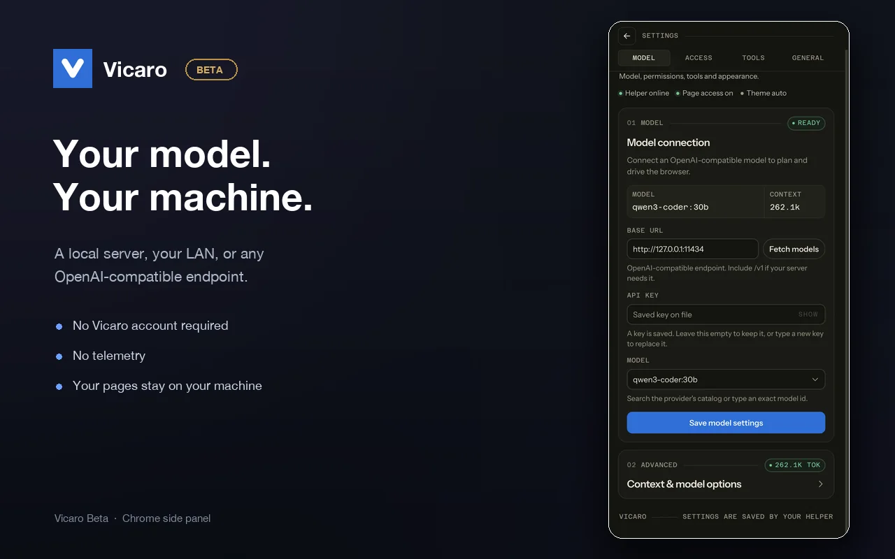
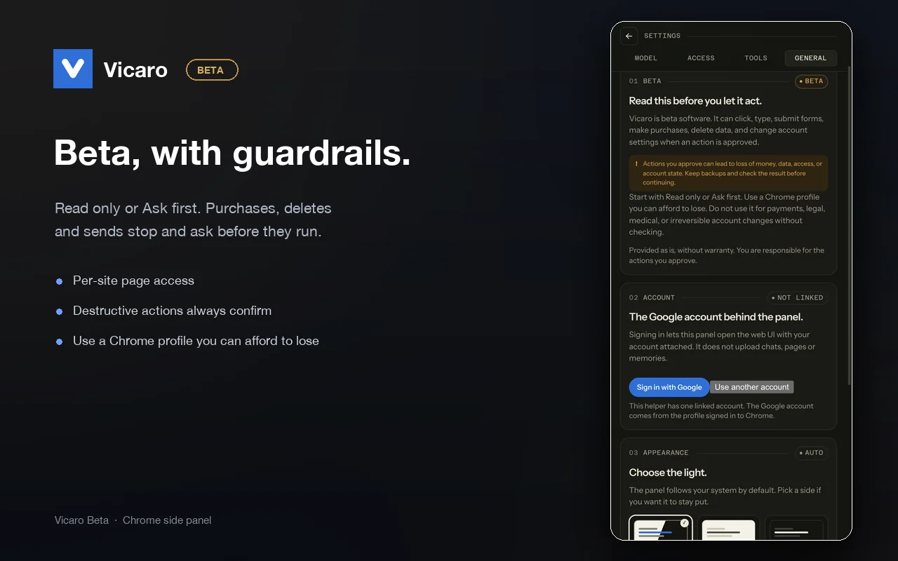

Reads what you see
Open tabs, the page in front of you, and the interactive elements behind it, with the logins you already have.
A self-hosted browser assistant / Beta for macOS
Meet Vicaro, the assistant that reads, clicks and works alongside you in the Chrome you already use. Your model, your machine, your control.

An assistant in your browser / An illustrative preview
Beta software. It can click, type, submit forms, make purchases, delete data, and change account settings. Review every action before you approve it.
Read the safety notesWhat is Vicaro?
Vicaro is an AI assistant that runs in Chrome's side panel and acts on the browser you already use. It reads open tabs, clicks, types, and reports back. A small helper on your Mac runs the loop and talks to the model you choose.
Unlike a hosted browser agent, Vicaro does not run your pages in a vendor cloud. The helper, history and memories stay on your machine, and page content goes only to the model endpoint you configure.
What it does
Vicaro sees the tab you are on, acts inside it, and checks the result before it answers.
Open tabs, the page in front of you, and the interactive elements behind it, with the logins you already have.
Clicks, types, scrolls and navigates. After anything that changes the page, it verifies the result before continuing.
Purchases, deletes, sends and uploads always stop for your Allow. In lighter modes, reads and simple navigation can run without a prompt.
Registers as an MCP server for Cursor, Claude Code, Claude Desktop, Codex, Grok Build, VS Code, Windsurf and opencode.
A closer look
The panel, the model settings, the tool connections, and the beta warning users see before they let it act.




How it works
The thinking runs on your machine. The browser is the interface. There is no Vicaro server in the middle.
A small menu-bar app. It holds the model connection, history, memories and the secret vault, locally.
macOS appA Chrome side panel. You grant page access per site, the first time you use it. The extension has no broad host grant.
Chrome 116+Ollama, LM Studio, mlx or vLLM on your LAN, or any OpenAI-compatible endpoint with your key.
Local or hostedSelf-hosted by design
Vicaro does not ship a default model and does not run a fallback. You choose the endpoint that sees your pages, whether that is a server on this Mac, a machine on your LAN, or a provider you already pay for.
Settings, Model. The endpoint is yours, and the key stays on your machine.
MCP
Vicaro registers itself as an MCP server, so Cursor, Claude Code, Codex and other assistants can list tabs, read pages, click and type. You tick the tools that may connect, and each config is backed up first.
The same approval gate applies, whether the request comes from the panel or from your editor.
Settings, AI tools. Only the tools you tick are changed.
Vicaro can click, type, submit forms, make purchases, delete data, and change account settings. Treat it like a capable intern using your logged-in browser, not a sandbox.
Install
macOS 13.5+ and Chrome 116+. The Linux helper is in progress. Windows is not supported yet.
Installs the helper into ~/Applications, stages the extension, and copies its folder path to your clipboard.
curl -fsSL https://vicaro.creativeducks.com/install.sh | shThe helper is ad-hoc signed for now. The installer says what it touches and how to undo it.
Chrome Web Store: listing in preparation. Until it is live, use the unpacked extension the installer stages. The same package is on GitHub Releases.
Prefer a disk image? Download the universal DMG. The same app runs on Apple Silicon and Intel.
Questions
Not for anything you cannot afford to lose. It can click, type, submit forms and change settings. Start with Read only or Ask first, keep backups, and use a Chrome profile that does not hold your most important accounts.
No. Vicaro has no servers. Page text, tool results and messages go to the model endpoint you configure, and nowhere else. That endpoint may be local, on your LAN, or a hosted provider you chose.
No. The panel works without one. Google sign-in is optional and only links one account to the web UI. No chats, pages or memories are sent to Google or Firebase.
Yes. Vicaro registers as an MCP server in the tools it finds, so they can list tabs, read pages, click and type with the same safety gate as the panel. You choose which tools may connect.
macOS is the supported beta today. A Linux helper build is in progress. Windows is not supported yet.
Nothing while it is in beta. If that changes, the price will be announced before it applies.
No. Vicaro is closed-source software, and the helper is self-hosted: it runs on your machine and keeps its data in a local database you can inspect or delete.